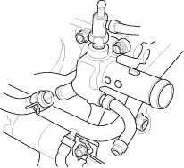
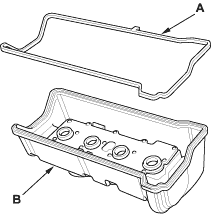
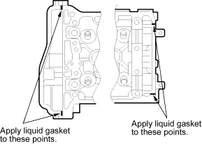

- Install the water bypass hose.

- Install the intake manifold (see page 9-5).
- Install the exhaust manifold (see page 9-7).
- Install the cam chain (see page 6-16).
- Adjust the valve clearance (see page 6-10).
- Install the drive belt (see page 4-25).
- Clean the battery posts and cable terminals with sandpaper, then assemble them and apply grease to prevent corrosion.
- After installation, check that all tubes, hoses and connectors are installed correctly.
- Inspect for fuel leaks. Turn the ignition switch ON (II) (do not operate the starter) so that the fuel pump runs for about 2 seconds and pressurises the fuel line. Repeat this operation two or three times, then check for fuel leakage at any point in the fuel line.
- Refill the radiator with engine coolant, and bleed air from the cooling system with the heater valve open (see page 10-6).
- Inspect the idle speed (see page 11-110).
- Inspect the ignition timing (see page 4-16).

- Thoroughly clean the head cover gasket and the groove.
- Install the head cover gasket (A) in the groove of the cylinder head cover (B).

- Check that the mating surfaces are clean and dry.
- Apply liquid gasket, P/N 08C70-K0234M, 08C70-K0334M or 08C70-X0331S on the chain case and the No. 5 rocker shaft holder mating areas.
NOTE: Do not install the parts if 5 minutes or more have elapsed since applying liquid gasket. Instead, reapply liquid gasket after removing old residue.
